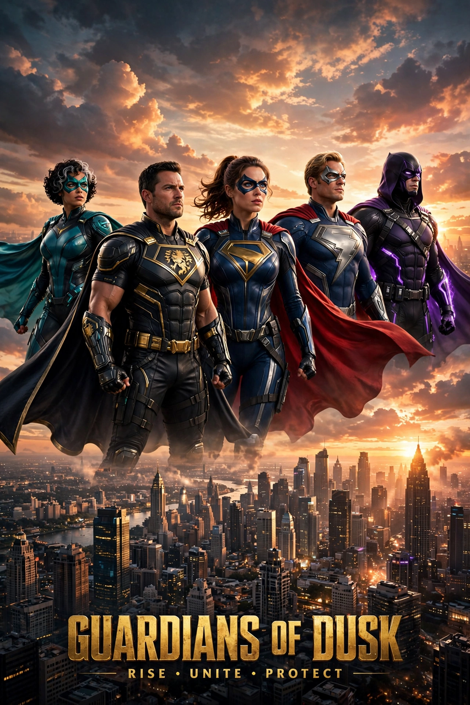

| Genre | Action, fantasy, science fiction |
|---|---|
| First features | Serials of the 1930s–40s; Superman (1978) |
| Highest-grossing | Avengers: Endgame (2019), ~$2.8 billion |
| Major franchises | Marvel Cinematic Universe, DC, X-Men, Spider-Man |
A superhero film is a film genre that focuses on the actions of superheroes: individuals who usually possess superhuman abilities and are dedicated to protecting the public. These films typically feature action, adventure, fantasy, or science fiction elements, with a first film often telling the hero's origin story and subsequent films pitting them against supervillains.
Superheroes reached the screen early in chapter-play serials such as The Adventures of Captain Marvel (1941) and Batman (1943). Richard Donner's Superman (1978), starring Christopher Reeve, proved a big-budget comic-book adaptation could succeed critically and commercially. Tim Burton's Batman (1989), with Michael Keaton, revived the genre with a darker tone, followed by sequels and imitators of uneven fortunes through the 1990s.
The modern boom began with X-Men (2000) and Sam Raimi's Spider-Man (2002). Christopher Nolan's Dark Knight trilogy (2005–2012) brought critical prestige, and Heath Ledger's Joker won an Oscar. Marvel Studios' shared-universe strategy, launched with Iron Man (2008), culminated in Avengers: Endgame (2019), briefly the highest-grossing film ever made; superhero films dominated the global box office through the 2010s.
Critics have debated the genre's dominance of studio slates and mid-budget cinema, and since roughly 2023 a run of underperforming releases has fuelled discussion of "superhero fatigue". Acclaimed outliers — the animated Spider-Verse films, Logan, Joker — show the genre's range from western-inflected drama to psychological thriller.
From Wikipedia, the free encyclopedia. Recreated article.